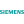
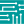

AUTOMATISME
TwinCAT
Environnement d’automatisation industrielle utilisé pour programmer des automates et piloter des systèmes de commande.
Formation & expérience / 03
Mon parcours en Génie Électrique et Informatique Industrielle m’a permis de développer des bases en automatisme, électronique et maintenance industrielle, à travers des projets techniques et un stage.
Formation
IUT de Bordeaux — Gradignan
Automatisme et Informatique Industrielle. Formation en cours.
IUT de Bordeaux — Gradignan
Projets : robot mini-sumo et Mugochaud.
IUT de Saint-Dié-des-Vosges
Lycée technologique — Léconi, Gabon
Intitulé exact du diplôme à confirmer avant publication.
Expérience professionnelle
Du 7 avril au 30 juin 2026
Cette expérience m’a confronté à des documents industriels, à la logique de contrôle et à la supervision d’un procédé simulé.
À personnaliser : ajoute un exemple concret de difficulté, de décision technique et de résultat obtenu. Ne publie pas de documents confidentiels de l’entreprise.
Environnement technique
Une sélection des outils rencontrés pendant ma formation GEII et mes projets. Les descriptions présentent leur usage général ; précise si besoin ceux que tu maîtrises le mieux.
Environnement d’automatisation industrielle utilisé pour programmer des automates et piloter des systèmes de commande.

AUTOMATISMESuite Siemens pour configurer des automates, programmer la logique de commande et préparer la supervision IHM.
Plateforme open source de contrôle et de supervision de procédés industriels, avec visualisation et gestion des signaux.

ÉLECTRONIQUEOutil de conception et de simulation de circuits électroniques pour étudier leur comportement avant réalisation.
Outil de génération de signaux utilisé pour produire des formes d’onde et faciliter certains essais électroniques.
Logiciel de conception électronique pour dessiner des schémas et concevoir des circuits imprimés (PCB).
Environnement de calcul numérique et de programmation pour analyser des données, effectuer des calculs et simuler des systèmes.
 CODE
CODEÉditeur de code pour écrire, organiser et déboguer des programmes avec des extensions adaptées aux langages utilisés.
Outil de création de schémas électriques et de documentation de projets d’installation électrique.
Environnement de saisie et de simulation de schémas électroniques, souvent utilisé pour tester des montages virtuellement.
Logiciel de conception assistée par ordinateur pour modéliser des pièces, assembler des composants et préparer des vues 3D.